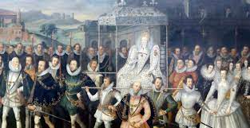

Introduction
In this document we will be analysing three sources and explaining their prupose, mission, and limitation. It is important for us to write this because these three sources provide the information for all of the other pages, and if there is a heavily biased opinion or outdated information that could lead to misinformation.
"Timeline of the British Empire" | Historic UK:
The article "Timeline of the British Empire" is a credible article from Historic UK that is intended to be used in historical research. It is relatively biased as it states in the mission that it intends to allow for history enthusiasts to understand more about British history. This article is relevant because it explains the timeline and impact of the British Empire, but is limited in that it does not provide a comprehensive analysis of the Empire's legacy or diverse perspectives.
"British History Primary Sources" | Gale University:
The website "British History Primary Sources, Journals & Other Resources" from Gale provides a wide range of resources for the study of British history, including primary sources, databases, and eBooks covering various topics such as the 18th and 19th centuries, as well as the 20th century. These resources offer valuable insights for researchers and students interested in exploring different periods of British history and can be used to examine and analyze the evolution of Britain over time
"Colonies and dependencies from 1782" | National Archives:
The National Archives provides a comprehensive guide on "Colonies and dependencies from 1782," offering valuable resources for researching the British Empire's history and its former colonies. The guide outlines ways to access records held at The National Archives relating to the British Empire from 1782 and provides insights into navigating their online catalogue to find relevant document series. It also highlights the importance of consulting "confidential print" for gaining an overview of Colonial Office correspondence before accessing the original correspondence series. The collection of records at The National Archives is described as an unrivaled resource on the history of the British Empire and its former colonies, making it a valuable source for in-depth research.
Conclusion
We have effectively evaluated three sources, I hope you can gain insight from where we get our information based on these paragraphs.